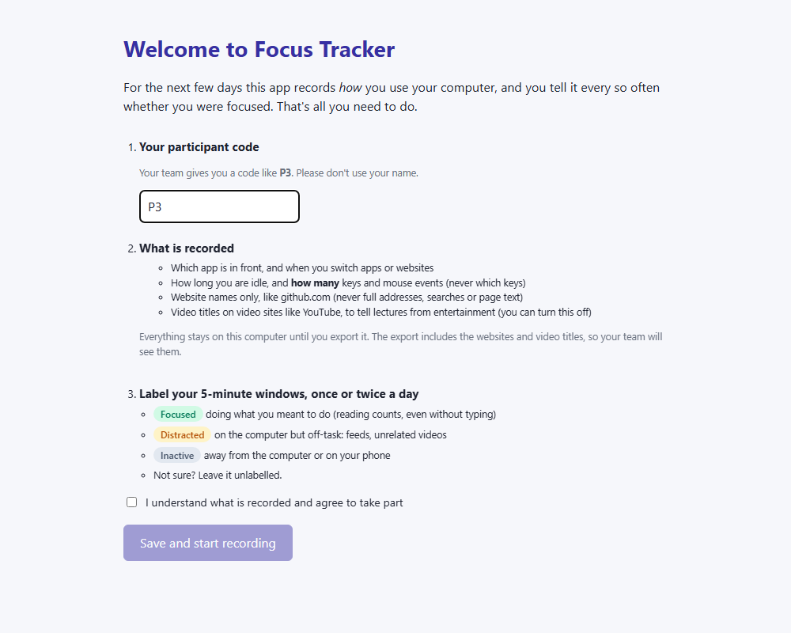
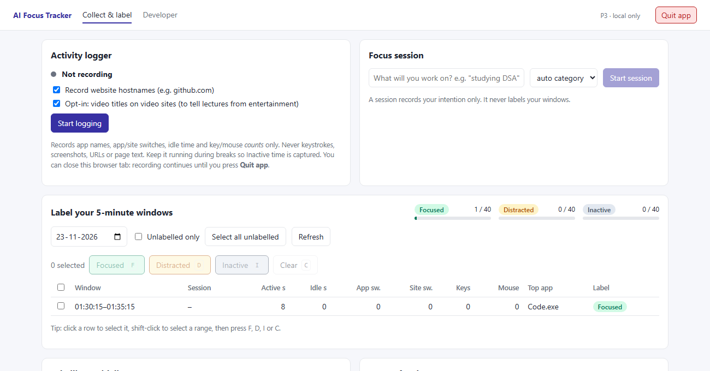

Focus Tracker: Quick Guide
For participants. About 5 minutes to set up, then 2 minutes of labelling per hour you work.
Your participant code: Send your file to:
1 Open it the first time
- Save FocusTracker.exe somewhere you'll keep it, for example your Documents folder.
- Double-click it. Windows will probably show a blue box: "Windows protected your PC".
Click More info, then Run anyway.
- Your browser opens the Focus Tracker page. A Focus Tracker icon also appears on your desktop.
If nothing happens, or your antivirus says it removed a threat: this is a false alarm,
because the app counts key presses (never which keys). Don't try to fix it alone: ask the team member who gave you the file.
(In Windows Security: Virus & threat protection → Protection history → the item → Allow.)
2 Welcome screen (only once)
- Type the participant code your team gave you (like P3). Not your name.
- Tick Start automatically when Windows starts (recommended).
- Tick I understand… and press Save and start recording.
Recording has started. You can close the browser tab: it keeps recording in the background.

The welcome screen.
3 Every day
- The app starts with Windows (if you ticked the box). Otherwise, double-click Focus Tracker on your desktop.
- Check that the page says Recording since … with a green dot. If it says Not recording, press Start logging.
- Keep it running during breaks too. That's how the app learns what "Inactive" looks like.
- Optional: when you sit down to work, type what you'll do in Focus session (e.g. "studying DSA") and press Start session.
4 Label your windows (once or twice a day)
The app splits your time into 5-minute windows. For each one, say what you were mostly doing.
Do it the same day, ideally right after you finish working: you'll remember better.

Click a row to select it; hold Shift and click another row to select everything in between. Then press a button (or a key).
| Label | Use it when, for most of the 5 minutes, you were… | Key |
|---|
| Focused | doing what you meant to do. Reading or watching a lecture counts, even without typing. | F |
| Distracted | on the computer but off-task: social media, unrelated videos, jumping between tabs. | D |
| Inactive | away from the computer, or on your phone. | I |
| Not sure / mixed | Leave it unlabelled. A wrong label is worse than no label. | |
Made a mistake? Select the window and press another label, or C to clear it. Grey rows are still in progress and can be labelled after they finish.
The bars at the top count your labels; the team aims for about 40 of each.
5 Send your data to the team
- Scroll down to Export for the team and press Export my labelled windows.
- A file named like
focus_windows_P3_….csv appears in your Downloads folder.
- Send that file to the person named at the top of this guide (WhatsApp, email or Drive). Do this when they ask, e.g. every evening.
The file contains the numbers, your labels, the websites you visited and any
video titles recorded in each window and the apps you used, so your team will see them. It never contains what you typed.
(To stop recording video titles, untick "video titles" before pressing Start logging.)
6 Stopping, and if something goes wrong
| Stop recording for now | Press Stop logging. To quit completely, press Quit app (top right). |
| Page won't open / "can't reach" | Double-click Focus Tracker on the desktop again. |
| An error message appears | Send the file it names (app.log) to your team. |
| Where is my data? | Only on this computer, in %LOCALAPPDATA%\FocusTracker. Nothing is uploaded. |
| Finished taking part | Export once more, press Quit app, untick "Start automatically" first if you ticked it, then delete the app and that folder. |